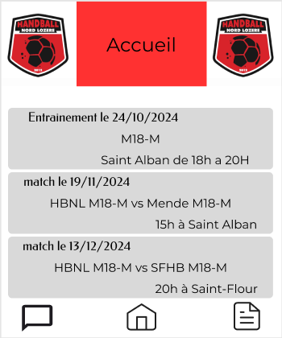
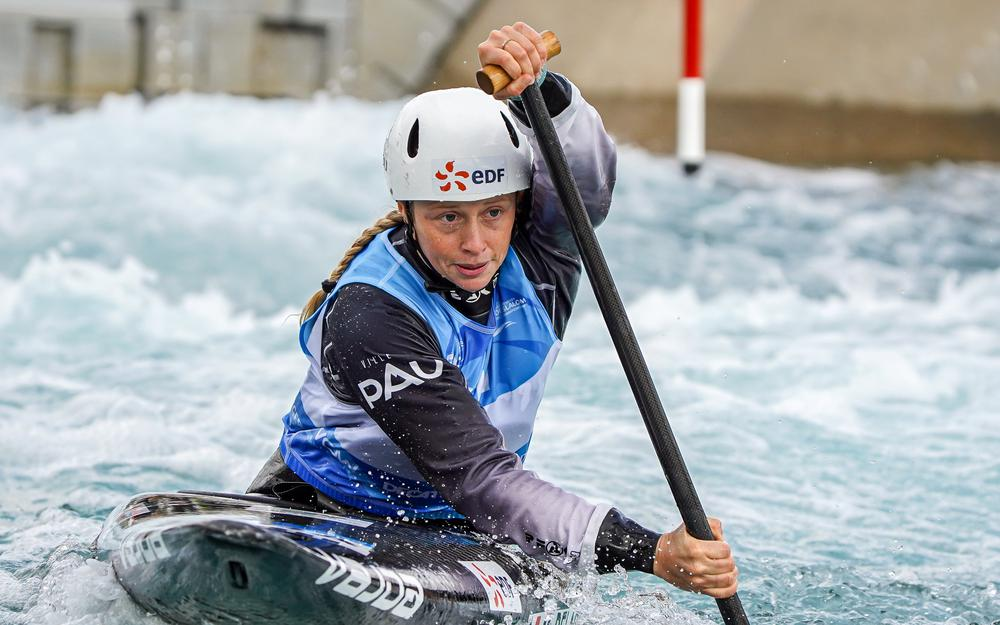

à propos de moi
Je m'appelle Gabin, j'ai 18 ans et je suis actuellement en première année du BUT Informatique à l’IUT de Blagnac. Passionné d’informatique depuis l’âge de 11 ans, j’ai toujours été curieux d’en apprendre davantage sur ce domaine, que ce soit à travers la programmation, le développement web ou encore les systèmes d’exploitation.
Après avoir obtenu un baccalauréat général avec les spécialités Mathématiques et Numérique et Sciences Informatiques (NSI), j’ai choisi de poursuivre dans cette voie pour approfondir mes connaissances et acquérir de solides compétences en informatique.
Mon parcours me permet de développer des compétences techniques tout en travaillant sur des projets concrets, et je suis toujours motivé par l’idée d’explorer de nouvelles technologies et relever de nouveaux défis.
Mes compétences
Actuellement étudiant en BUT Informatique, je développe de solides compétences techniques et pratiques dans le domaine de l’informatique. Je maîtrise plusieurs langages de programmation, notamment Python et Java, ce qui me permet de concevoir des applications robustes et performantes.
En plus de ces langages, je possède une bonne expertise en développement web, avec une maîtrise des technologies HTML et CSS, essentielles à la création de sites web ergonomiques et modernes. Je suis également à l’aise avec les scripts Shell, ce qui m’aide à automatiser des tâches et à travailler efficacement dans des environnements Unix/Linux.
Ma formation et mes compétences me permettent de travailler sur des projets variés, allant de la programmation système au développement web. Je suis motivé par les défis et cherche constamment à enrichir mes connaissances pour mener à bien des projets innovants.
Mes projets
Dans le cadre de la ressource R1.05, nous avons été chargés de réaliser un recueil des besoins de l'association Handball Nord Lozère. L’objectif était d’établir un bilan détaillé des attentes du client, sans proposer directement de solutions techniques, mais en suggérant des pistes adaptées à leurs besoins.
Pour faciliter la compréhension et la visualisation des solutions potentielles, nous avons conçu des maquettes, élaboré des fiches persona et réalisé des user flows décrivant les parcours utilisateurs.

L’application Canoë (ressource R1.01) a été développée pour enregistrer les informations des céistes (athlètes de canoë), en incluant les temps réalisés sur deux manches ainsi que leurs éventuelles pénalités.
Elle permet ensuite de vérifier si le céiste a été éliminé en raison d’une chute à l’eau au cours de l’une des deux manches. Les temps de chaque manche sont convertis en millisecondes et les pénalités sont intégrées au calcul.
Enfin, l’application additionne les temps des deux manches, établit un classement final et génère un podium des meilleurs céistes.
